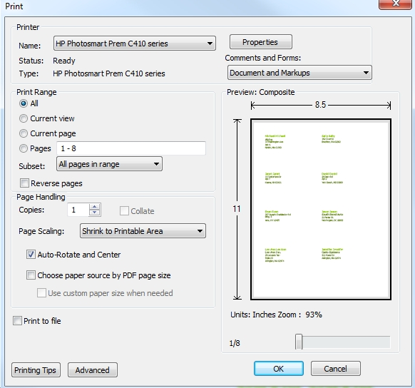
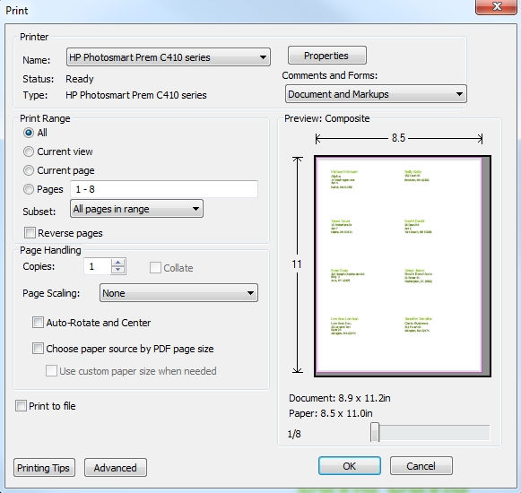

Print labels in a PDF
Problem: When I download a PDF with mail labels, they don't line up on my printer when I print the PDF (usually stretched or switched from aspect)Solution: When printing a PDF, don't accept the defaults for Page Scaling and Auto-Rotate settings in Adobe Acrobat Readers print dialog, instead select Scaling of 'None' and 'Auto-rotate' off.
By default - these are set to page-scaling 'Shrink' and 'Auto-rotate' on

Select None & turn off Auto-Rotate.
